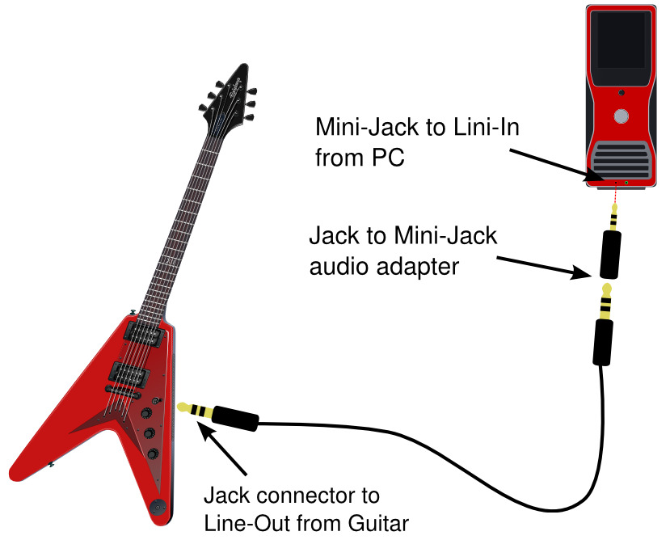
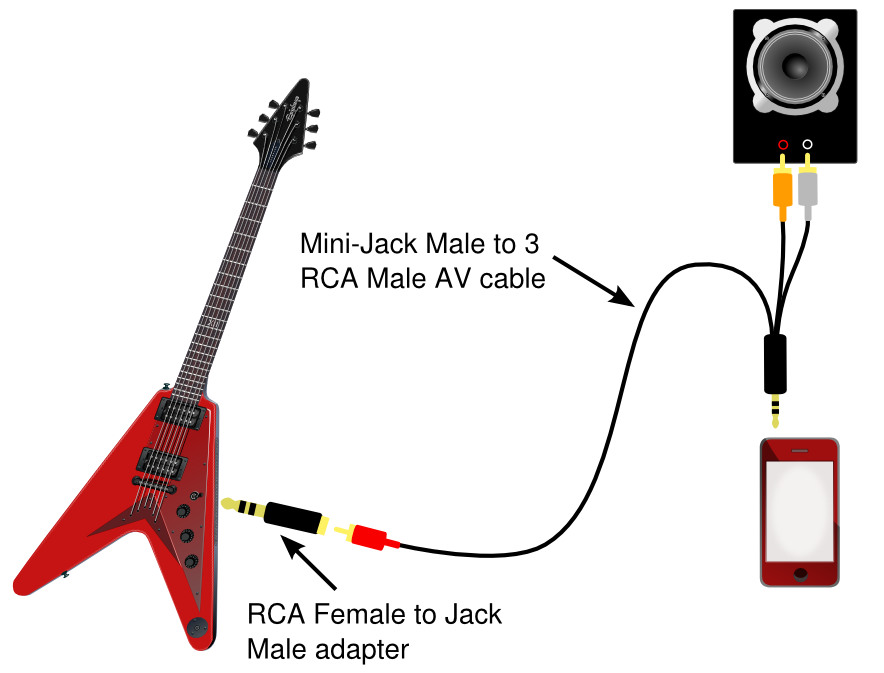

Speed and compatibility
Guitar-Effects is available for modern browsers, Firefox OS, Android and very soon on iOS and Tizen.
Guitar-Effects only supports Firefox OS 1.2 or newer.
Some effects, such as Delay, Chorus and Reverbs, need a lot of processing speed. and not recommended for use in mobile devices.
If you use Android can significantly improve the speed by updating your system to version 4.1 or newest.
Level control
The effects pedals have a volume control(Level), however this only works if the cabinet is off and the pedal is the last to be added to fix this issue you can use a pedal LIMITER.
Some effects, like reverbs, use Level control to control the effect level.
Controls
How to use the controls: just press control and move the mouse (or finger) to the left (to decrease) or right (to increase). Try it:
<-move to left to decreasemove to right to increase->
Adding effects
How to use the pedalboard: You can start by selecting the cabinet, then add (with "+Stomp") or remove some pedals (with "Delete"). The processing order of the effects depends on the order in which you add, the first to be added will be the first to be processed.
Touch under the stomp to turn them off (or turn them on).
And now you can press the microphone icon to turn on the microphone (use headphones or external speakers to avoid feedback), or listen to the demo by clicking "Play Demo".
Guitar-Effects with a PC
Most of the instruments bring a audio jack, if your device does not have a jack you can buy a Jack to Mini-Jack (3.5mm) adapter. When you have what is necessary, connect the audio output of the instrument to the microphone input of your device.

Guitar-Effects with a mobile
In mobile devices the audio input and output may be shared, then you have three options:
1- Connect the device to an external speaker and use the microphone of your device to capture the sound of the instrument. This will give us a very poor audio quality.
2- Buy an iRig.
3- Buy a Mini-Jack (Male) to 3 RCA(Male) cable and a RCA(female) to Jack(Male) adapter. Connect them as follows:

(The color combination can change)
If your speakers don't have a RCA in, try using a 2 RCA(females) to Jack(male) adapter.
You can buy all these element in a electronic shop.
Velocidad y compatibilidad
Guitar-Effects se encuentra disponible para navegadores modernos, Firefox OS, Android y dentro de muy poco para iOS y Tizen.
Guitar-Effects solo es compatible con Firefox OS 1.2 o mas nuevo.
Algunos efectos, como los Delays, Chorus y Reverbs, necesitan una gran cantidad de velocidad de procesamiento y no se recomienda su uso en dispositivos móviles.
Si utiliza Android puede mejorar considerablemente la velocidad actualizando su sistema a la versión 4.1 o una mas nueva.
Level control
Los pedales tienen un control de volumen(Level), sin embargo este solo funciona si el gabinete esta apagado y el pedal es el ultimo en ser agregado, para solucionar este inconveniente puede usar un pedal LIMITER.
Algunos efectos, como reverbs, utilizan el control Level para controlar el nivel del efecto.
Controles
Para usar los controles sólo tiene que pulsar el control y mueva el ratón (o el dedo) a la izquierda (para disminuir) o a la derecha (para aumentar). Inténtelo:
<-mueva a la izquierda para disminuirmueva a la derecha para aumentar->
Agregando efectos
Puede empezar seleccionando el Gabinete(CABINET), entonces agregue (con "+Stomp") o quite algunos pedales (con "Delete"). El orden de proceso de los efectos depende del orden en que lo hayas agregado, los primeros que hayas agregado serán los primeros en ser procesados.
Toca debajo de los pedales para apagarlos (o para volverlos a prender).
Y ahora puede presionar en el icono del micrófono para encender la linea de entrada (use parlantes externos o auriculares para evitar el feedback), o puede escuchar el demo presionando en "Play Demo".
Usar Guitar-Effects con una pc
La mayoría de los instrumento tienen un conectar Jack de audio, si tu dispositivo no tiene una entrada Jack puedes comprar un adaptador Jack a Mini-Jack (3.5mm). Cuando tengas lo necesario conecta todo como en la siguiente imagen:
Usar Guitar-Effects con un móvil
En dispositivos móviles la entrada de audio y la salida pueden estar compartidas, en este caso tiene tres opciones:
1- Conecta el dispositivo a una salida de audio externa y utiliza el micrófono de tu dispositivo para capturar el sonido del instrumento. Esto le dará una calidad de audio muy pobre.
2- Compre un iRig.
3- Compre un cable Mini-Jack(Macho) a 3 RCA(Machos) y un adaptador de RCA(Hembra) a Jack(Macho). Conéctelos de la siguiente forma:
(La combinación de colores puede variar)
Si sus parlantes o amplificadores no tienen una entrada RCA puede usar un adaptador de 2 RCA(hembras) a Jack(Macho).
Los elementos anteriores suelen encontrarse en cualquier tienda de electrónica.